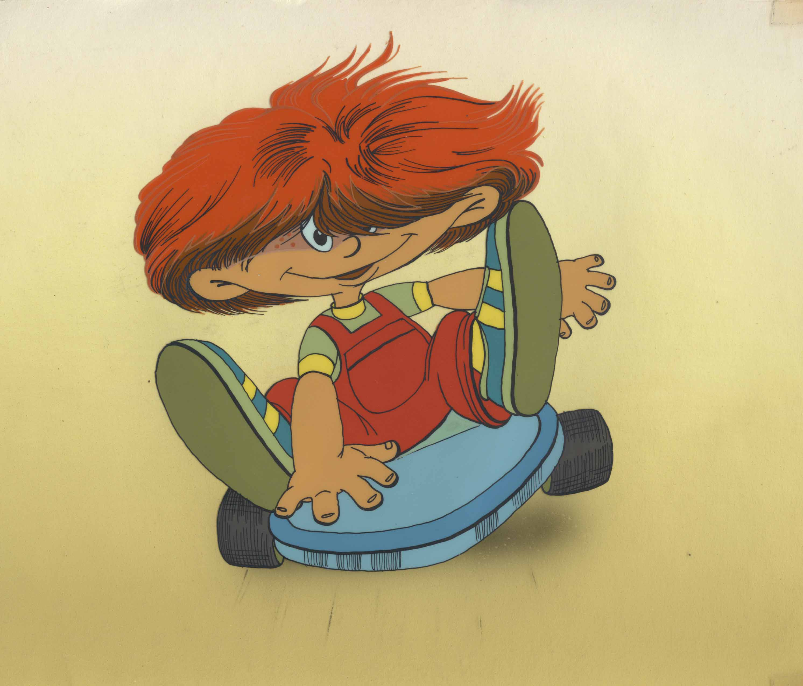

SiteA hero (masculine) or heroine (feminine) is a person or main character of a literary work who, in the face of danger, combats adversity through feats of ingenuity, bravery or strength, often sacrificing their own personal concerns for a greater good.
The concept of the hero can be found in classical literature. It is the main or revered character in heroic epic poetry celebrated through ancient legends of a people, often striving for military conquest and living by a continually flawed personal honor code.[1] The definition of a hero has changed throughout time. Merriam Webster dictionary defines a hero as "a person who is admired for great or brave acts or fine qualities."[2] Examples of heroes range from mythological figures, such as Gilgamesh, Achilles and Iphigenia, to historical figures, such as Joan of Arc, modern heroes like Alvin York, Audie Murphy and Chuck Yeager, and fictional superheroes, including Superman and Batman.
